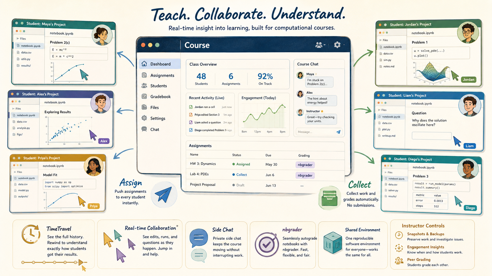
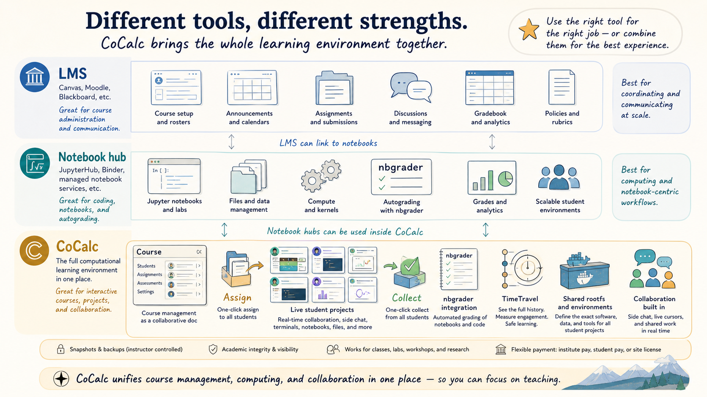
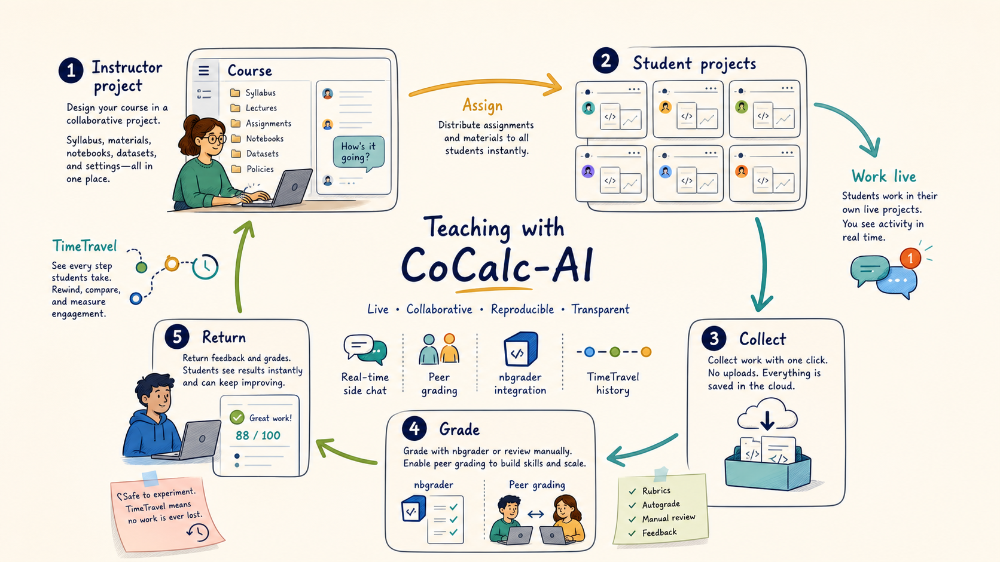
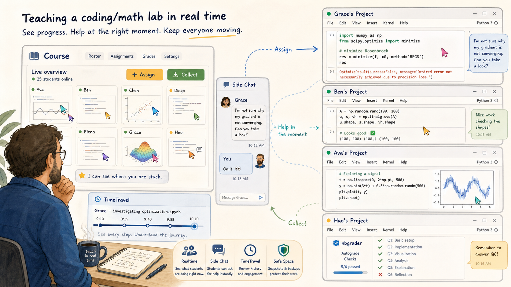

A CoCalc-AI field guide for instructors
Teaching with CoCalc-AI
CoCalc is not just a place to post assignments. It is a live computational classroom: every student has a project, instructors can see and help in real time, assignments move without uploads, notebooks can be autograded, and the software environment can be identical for the whole course.

Most learning management systems are excellent at rosters, calendars, announcements, gradebooks, files, and institution-wide communication. CoCalc overlaps with some of that, but the center of gravity is different.
CoCalc is strongest when the course work itself happens in a live technical environment: notebooks, terminals, LaTeX, code, data, plots, side chat, history, and sometimes agents. The course manager is the control surface for that environment.
Use the right tool for the right teaching job
Canvas, Moodle, Blackboard, and similar systems are natural homes for institution-wide administration. JupyterHub-style systems are natural homes for notebook execution. CoCalc sits in the overlap, then adds one important thing: the instructor can work inside the same live project environment as the student.
That makes CoCalc a strong fit for computational math, data science, programming, scientific computing, research workshops, technical writing, and any course where the real learning happens while students manipulate files and run code.

Give every student a real project
In a CoCalc course, students do their work in separate projects. That isolation matters: each student has their own files, notebooks, terminals, packages, outputs, and history. Group projects are also possible when collaboration is the point.
The instructor project contains the course file, assignments, handouts, configuration, shared materials, and the roster. Other instructors and TAs can collaborate on that course interface because the course file itself is a collaborative CoCalc document.
The course file is not just an admin screen
It is a collaborative document that drives the course workflow: students, assignments, handouts, grading state, project configuration, and activity. That is why multiple instructors can coordinate inside the same live course manager.
Assign, collect, grade, return
CoCalc changes the assignment ritual. Students do not package up files and submit them through a separate upload form. The instructor assigns a folder to student projects, students work there, and the instructor collects the work back into the course project.
That makes the workflow less ceremonial and more operational. You can distribute a notebook, collect it, inspect it, autograde it, return feedback, then repeat.

Teach while students are actually working
The unusual part of CoCalc teaching is realtime visibility. An instructor or TA can open a student's project, see the current file, watch edits, inspect output, and answer in a side chat at the moment help is needed.
This is useful in labs, office hours, workshops, and remote teaching. The point is not surveillance. The point is reducing the gap between "I am stuck" and "someone can see the exact state I am stuck in."

Grade in the same environment students used
Open collected work, leave comments, edit feedback, and return graded files from the course manager.
Autograde Jupyter notebook assignments, including configurable timeouts, output limits, hidden-test policy, and a dedicated grading project when useful.
Optionally redistribute collected work so students grade each other using instructor-provided markdown guidelines.
Rewind a student's work, understand how they got there, recover accidental damage, and see engagement over time.
Make the software stack part of the course
A computational course often fails on setup before it fails on mathematics or programming. CoCalc lets a course define the project environment students use. With managed RootFS images, a course can start every student in the same software stack, with the same tools and data available.
That is especially valuable for workshops, lab courses, specialized research software, and classes where "works on my laptop" should not be a weekly topic.
A safe place to learn by trying
TimeTravel, instructor-controlled snapshots, and backups make the environment less brittle. Students can experiment, break things, and recover. Instructors can preserve evidence when needed and restore course work without depending on a student's local machine.
Fit the institution, the class, or the workshop
CoCalc supports several course funding patterns: institute-paid seats, student-paid course memberships, and site-license coverage. That flexibility matters because a semester course, a one-day workshop, and a research group training program often have different constraints.
The product shape is the same in each case: students work in projects, instructors manage the course, and the technical work happens in a collaborative compute environment.
When CoCalc is the teaching center
- Students need notebooks, terminals, files, or LaTeX.
- Instructors want live visibility into student work.
- Assignments should move without upload/submission friction.
- The class needs a reproducible software environment.
- History, recovery, and academic-integrity evidence matter.
CoCalc is a live computational classroom
The short version: use your LMS for the institution-facing course shell if that is what your school expects. Use CoCalc when the course work itself needs to be live, computational, collaborative, reproducible, inspectable, and recoverable.